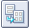

You can change the layout of each page separately.
 Important
ImportantFor PREMIUM Contents Print, you cannot change the layouts.
Select the page you want to change the layout of in the Edit screen, then click  (Change Layout).
Select the layout you want to use in the Change Layout dialog and click OK.
ImportantIf the new layout has a different number of frames per page from the current layout, the following will happen:
If the number of layout frames is increased |
: |
Images will move from the subsequent pages to fill all the frames in the new layout. |
If the number of layout frames is decreased |
: |
Pages with the new layout will be added until all the images on the pages with the current layout can be fitted. |
If you change the current layout for the front or back cover to one that has fewer layout frames, any image that does not fit in the new layout will be deleted, starting with the last image that was added to the former layout page.
 Note
NoteThe layouts that can be selected may vary depending on the Paper Size, Orientation, or the type of page selected (front cover, inside pages or back cover).
Select the Apply to all pages checkbox to change the layouts of all pages to the one you newly selected.
ImportantThe layouts of all pages are changed to the selected layout.
All images that do not fit in the new layout will be collected on the last page.
NoteThe layouts that can be selected may vary depending on the Paper Size and Orientation.
ImportantIf the new layout has a different number of frames per page from the current layout, the following will happen:
If the number of layout frames is increased |
: |
Images will move from the subsequent pages to fill all the frames in the new layout. |
If the number of layout frames is decreased |
: |
Pages with the new layout will be added until all the images on the pages with the current layout can be fitted. |
NoteThe layouts that can be selected may vary depending on the Paper Size and Orientation.
Select the Apply to all pages checkbox to change the layouts of all pages to the one you newly selected.